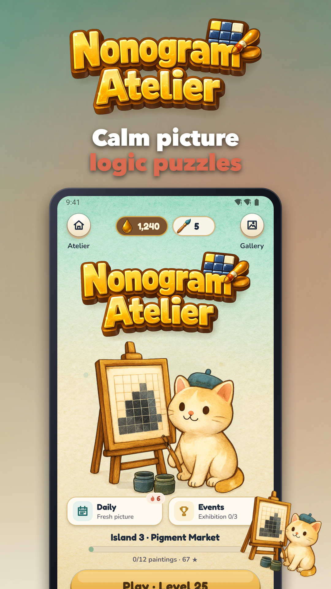
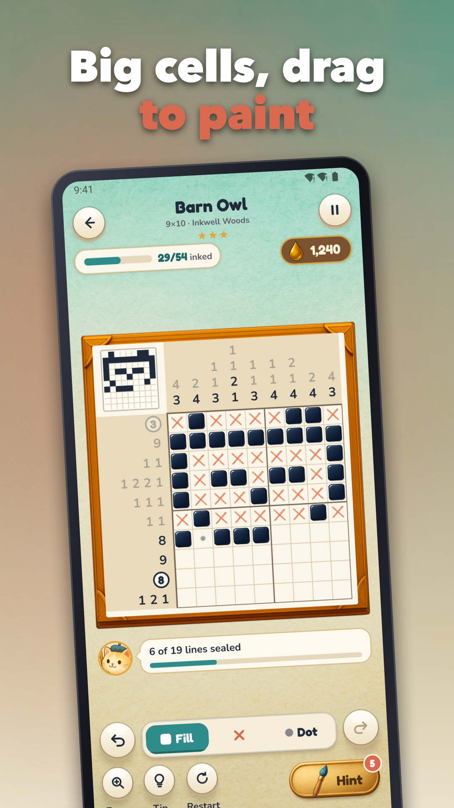
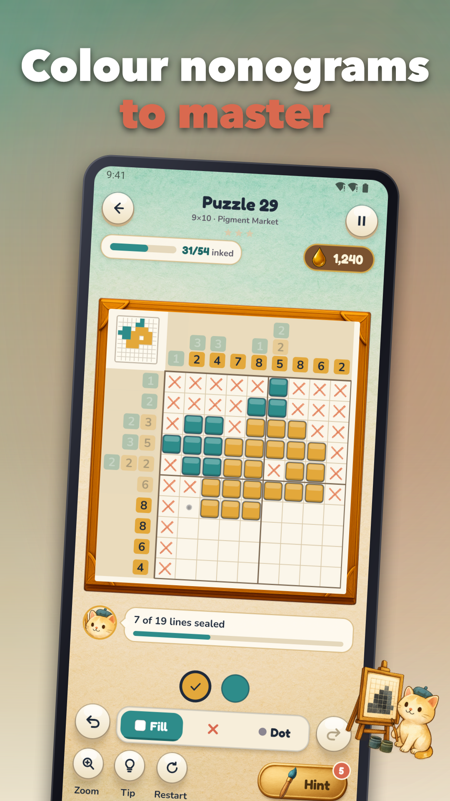
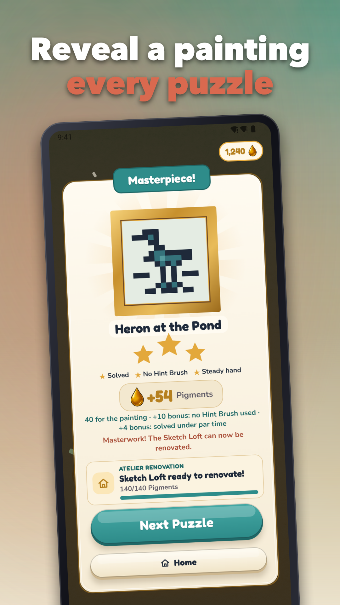
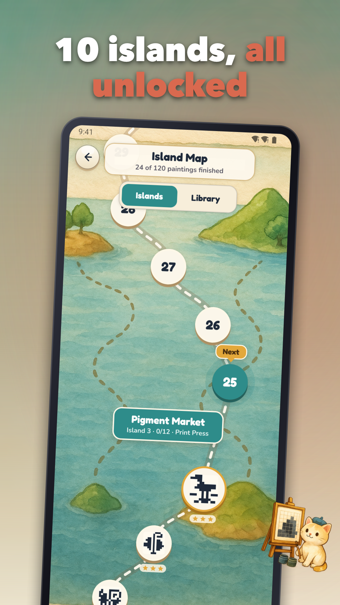
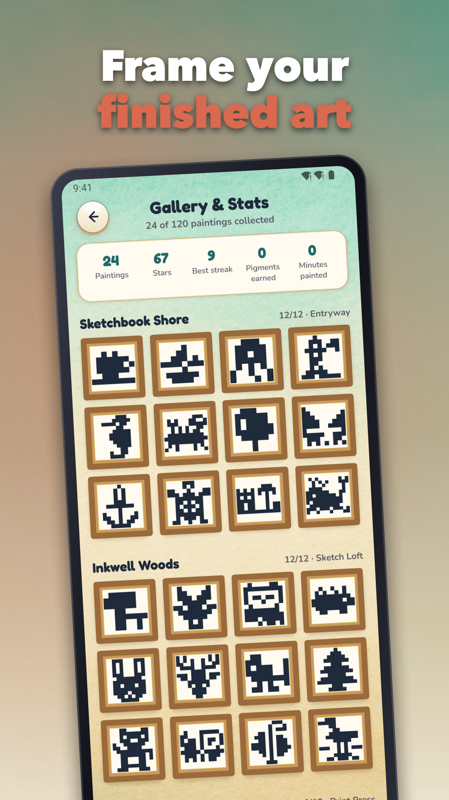

Nonogram Puzzles: Color Logic
Solve colour nonogram puzzles, reveal pictures and restore your atelier offline






Fill the grid, follow the clues and watch a hidden picture appear. Nonogram Atelier is a calm picture-logic game with 120 handcrafted levels, each one a small painting waiting to be revealed.
HOW IT PLAYS
Every row and column carries number clues that tell you which cells to fill. Use them to work out the picture, one line at a time. Some levels use a palette of colours, so the clues are coloured too and each run has to match its shade.
• Tap a cell to fill it
• Drag along a row or column to paint a whole run in one sweep
• Switch to the X or dot tool to mark cells you know are empty
• Undo a move or restart the level whenever you like
120 LEVELS ACROSS 10 ISLANDS
Travel through ten themed islands of handcrafted pictures, from small starter grids to big, detailed finales. Every level is open from the start, so you can jump to whatever you feel like solving.
A QUIET RENOVATION TO COME BACK TO
Finished pictures are framed and kept in your Gallery. Spend Pigments, the in-game coins you earn by solving, to restore the rooms of your atelier one by one.
STUCK? TAKE A HINT
Hint Brushes help when a line won't give way. You get 3 free every day, and you can pick up more with Pigments or by choosing to watch a rewarded ad.
DAILY HABIT, NO PRESSURE
• A daily puzzle with a forgiving streak
• Star ratings for each level
• A freeze boost to protect your streak
• Colourblind mode
• Sound and haptics settings you can switch off
PLAY ANYWHERE
The game works fully offline, which makes it a good fit for flights, commutes and evenings without Wi-Fi. There is no account or login, and your progress is stored on your device.
ADS AND PURCHASES
There are no banners in the early levels, and the first interstitial comes only after level 10. After that, ads appear at most once every four levels. Rewarded ads only play when you choose them. A one-time Remove Ads purchase takes the ads away, and optional coin packs are available at fixed prices with nothing random.
Pick up a pencil, choose an island and reveal your first picture tonight.
Support: jeets98e@gmail.com